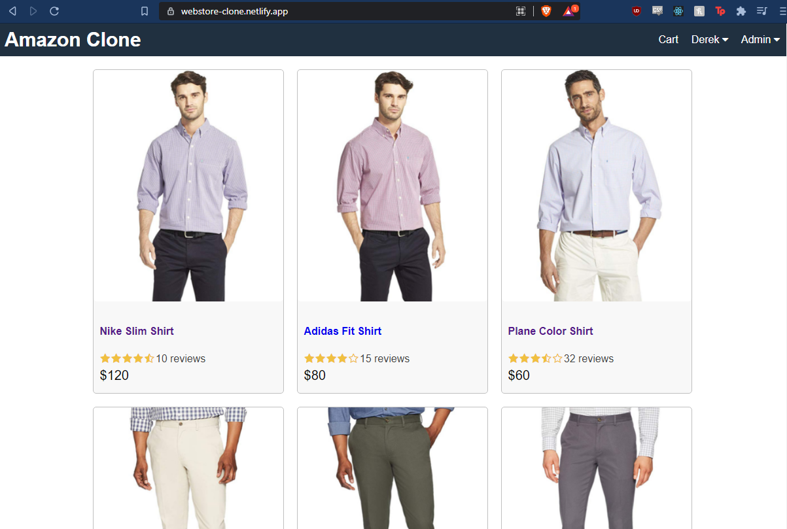

Amazon Webstore Clone
An amazon webstore clone built on the MERN stack. All of the frontend is built using typescript, while the backend was developed using vanilla js. It includes a backend API for orders, products, and users, a dynamic frontend with vanilla css and typescript, web tokens for user authentication, password salting and encryption, a react-redux store for statefulness, and detailed schema for data storage.
The Amazon Webstore Clone frontend is currently hosted on weblify, with the backend being hosted on Heroku. The code for this project can be found on my github or by following this link!
